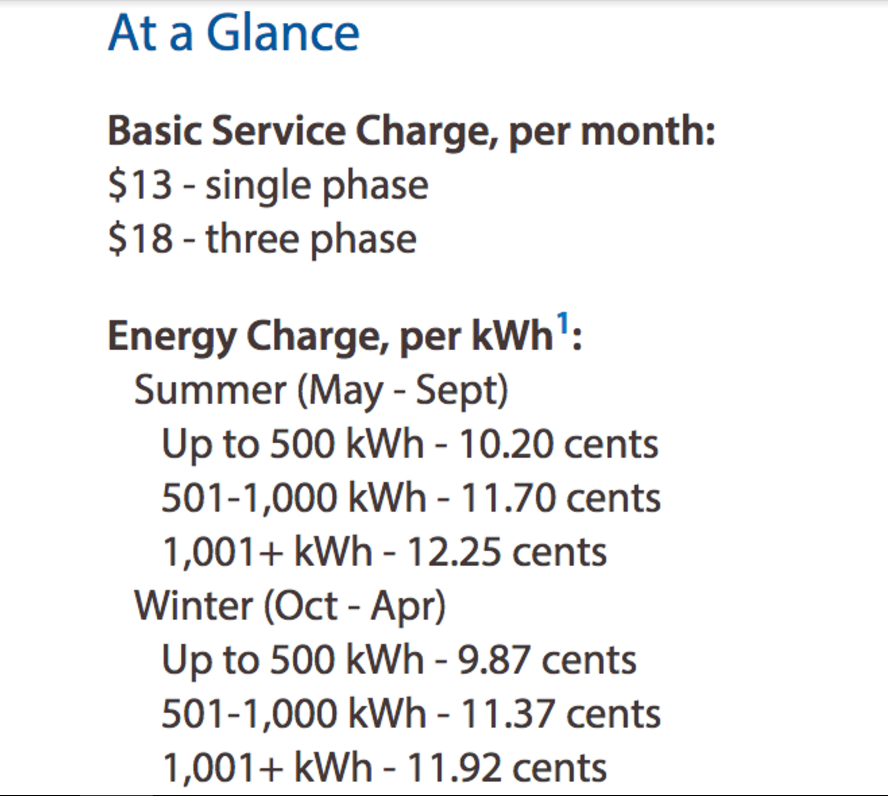
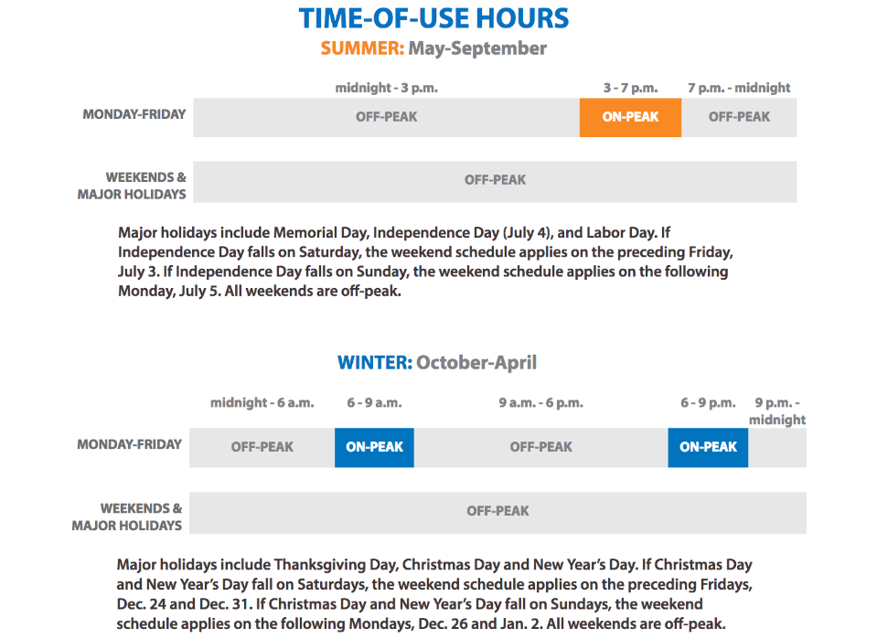

General Tips
- During the summer months, turn on your air conditioner before going to work. This will "pre-cool" your home and make it easier to use the air conditioner less during more expensive on-peak hours.
- Unplug any appliances not in use.
- Do laundry during off peak hours whenever possible.
- Go to TEP to find more ways to save!

